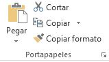
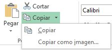
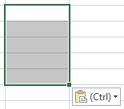
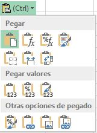
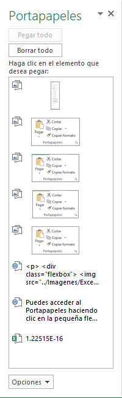
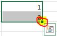
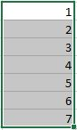
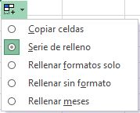

Excel
Formatos de contenido
El contenido de una celda puede ser de distintos tipos: números, texto, fechas, moneda, porcentaje… Por defecto las
celdas vienen con el formato “General”, y si al introducir algún dato lo detecta como algún formato específico cambia
su formato automáticamente al detectado. Por ejemplo, si selecciono una celda vacía que es de formato “General” y escribo
en ella una fecha (25/12/2017), esta pasará automáticamente a ser tipo fecha.
El formato de las celdas se puede comprobar en el grupo Número dentro de la ficha Inicio.
Cada formato viene por defecto con un tipo de alineación, de número de decimales y representación gráfica.
Por ejemplo, el formato “General” alinea el contenido a la izquierda, mientras que el de “Fecha” lo hace a la derecha.
Todos los formatos relacionados con número alinean a la derecha, el formato “Moneda” pone 2 decimales al número,
además del símbolo de la moneda representada, y el formato “Porcentaje” multiplica el número que hubiera antes en la
celda por 100 y añade el símbolo del porcentaje (%) a continuación del número.
Con todo esto se intenta hacer entender que el formato de una celda, tanto el formato de forma, como el de borde y el
de contenido, no influye para nada en la utilización de su contenido, todos los cambios de formato se hacen únicamente
por motivos visuales sobre la hoja de cálculo. Incluso si un número se introduce como formato de texto, al realizar
operaciones matemáticas sobre la celda Excel las realizará correctamente.
No hay por tanto una forma correcta de aplicar los formatos, cada usuario lo hará de una forma diferente, de acuerdo con los
criterios visuales que él mismo considere.
Como en casi todos los grupos, pulsando la esquina inferior derecha se abre la ventana con información del formato, en
este caso con la pestaña “Número” seleccionada, donde podemos ver y administrar de manera avanzada todas las categorías
del contenido que nos ofrece Excel:
Formato del contenido personalizado
Si abrimos la ventana con información del formato como se acaba de ver en el apartado anterior podemos ver
que la última de las categorías de formato de número es la “Personalizada”.
Con esta categoría podemos crear el formato del contenido como nosotros queramos, cambiando el número de decimales,
la forma de representación de los datos, el color…
Para la utilización del formato personalizado es fundamental comprender la utilización de estos caracteres
(lee la descripción y mira después la tabla para ver un ejemplo de cómo funciona):
| Atajo |
Resultado |
| # Almohadilla |
Presenta únicamente los dígitos significativos; no presenta los ceros sin valor. |
| 0 (Cero) |
Muestra los ceros sin valor si un número tiene menos dígitos que ceros en el formato. |
| ? (Interrogación) |
Agrega los espacios de los ceros sin valor a cada lado del separador, para alinear
los decimales. También puede utilizarse este símbolo para las fracciones que tengan un
número de dígitos variable. |
| / (Barra diagonal) |
Se utiliza para mostrar un número en forma de fracción. |
| , (Punto) |
Se utiliza para mostrar el separador de miles en los números superiores a 1000. Aunque entre
paréntesis pone “Punto” y en el símbolo pone una “Coma” no es ningún error. En España, cuando pulsas en Excel la tecla
de punto en el teclado numérico, el formato de número está predefinido para que aparezca una coma. Por tanto, según
la región configurada en Excel aparecerá un punto o una coma. |
| [COLOR] |
Para definir el color del texto desde el formato personalizado hay que escribir el nombre del color entre corchetes. |
Utilización del apostrofe (')
Al margen del formato personalizado, pero relacionado con los formatos del contenido, es importante conocer la utilización
del apostrofe "'" (en el teclado español está en la misma tecla que el símbolo de interrogación “?”). Este carácter
se utiliza para cancelar el formato que Excel daría por defecto a una celda al introducir unos datos.
Por ejemplo, si escribimos en una celda cualquiera "1/5" posiblemente nos ponga "01-may" o "0,20". Si lo que nosotros
queremos mostrar es literal "1/5", lo que tenemos que hacer es escribir un apostrofe ('') y después escribir "1/5",
y en la celda aparecerá exactamente lo que hemos escrito.
Otra situación en la que es útil el apostrofe es si estamos haciendo una lista comenzando cada elemento con "-" o "+"",
ya que Excel lo puede detectar como una suma o resta y dar error. Para evitarlo escribimos apostrofe ('') y a continuación
el símbolo "-" o "+".
Grupo portapapeles y autorrelleno
Es el primero de todos los grupos en la ficha Inicio. Aunque su uso es muy frecuente pues resulta una herramienta
bastante util casi nunca se accede a esto comandos a través del grupo en la barra superior de la pantalla, sino a
través de combinaciones de teclas en el teclado.

Este es el grupo que permite copiar o cortar celdas y pegarlas, con varias opciones alternativas
a cada una de estas acciones:
Copiar (Ctrl + c) y Pegar (Ctrl + v)
Cuando queremos duplicar el contenido de una celda en otra celda distinta seleccionamos la celda origen como celda
activa, pulsamos el comando “Copiar” o la combinación de teclas “Ctrl” y “c” de manera simultánea, seleccionamos la celda
de destino como celda activa y pulsamos el comando “Pegar” o la combinación de teclas “Ctrl” y “v” de manera simultánea.
Cuando copiamos el contenido de una celda en otra celda, si el contenido de la celda de origen es un texto, entonces la celda destino tendrá ese mismo texto.
Si el contenido de la celda origen era una fórmula con todos los números introducido a mano, entonces la celda destino
también tendrá esa misma fórmula exactamente igual. Sin embargo, si la celda origen es una formula con referencias
a otras celdas (de la misma hoja o de distinta), la celda de destino no hará referencia a las mismas celdas, sino a las
celdas en la posición relativa al desplazamiento.
Cortar (Ctrl + x)
Cortar funciona exactamente igual que copiar, con la diferencia que una vez que se pegan las celdas cortadas, las celdas +
origen se borran. El atajo de teclado es la combinación de teclas “Ctrl” y “x” de forma simultánea.
Copiar formato
unciona de manera similar a copiar, pero tan solo copia el formato de las celdas seleccionadas, no su contenido.
No tiene atajo de teclado, y una vez pulsado el comando el formato se pega en la celda destino que se seleccione,
no hay que pulsar ningún comando más.
Observación: Una funcionalidad importante de este comando, es pulsar doble click sobre el botón.
Al hacer esto seleccionamos de forma permanente el formato a copiar, pegándolo en todas las celdas que seleccionemos,
sin tener que pulsar sobre el botón varias veces si queremos copiar un formato a varias celdas.
Otras opciones de copiado
El comando Copiar tiene alternativamente la opción de copiar las celdas seleccionadas como una imagen.

Al hacer esto y usar pegar en este u otro programa se pegan las celdas copiadas (en contenido y forma) en forma de imagen,
como si hubiéramos hecho una captura de pantalla, sin poder modificar estos datos de ninguna forma (más que con un programa
de edición de imágenes)
Otras opciones de pegado
Al pegar unas celdas podemos utilizar distintos tipos de Pegar. Podemos acceder a las opciones desde el comando
del grupo Portapapeles, pulsando en la flecha hacia abajo justo debajo del botón Pegar, o podemos pegar las
celdas de manera normal y en la esquina inferior izquierda nos aparece un botón en el que pone (Ctrl).

Si hacemos clic, aparece el siguiente desplegable:

En orden de izquierda a derecha y de arriba abajo las opciones son estas:
-
Pegar: pega las celdas seleccionadas, la opción estándar al pegar, la que se realiza al
Crtl + v.
-
Fórmulas: pega solo las fórmulas, sin formato de ningún tipo, moviendo las referencias a otras cedas como
acabamos de ver.
- Formato de fórmulas y números: pega las fórmulas y su formato de contenido, no el formato de la celda.
- Mantener formato de origen: pega el formato de las celdas originales y su contenido.
- Sin bordes:pega todo excepto los bordes.
- Mantener ancho de columnas de origen: pega todo y fija el ancho de la columna donde esté la celda destino
igual al ancho de la columna de la celda original.
- Transponer: pega las filas en forma de columna y las columnas en forma de fila. Las referencias que tengan
las celdas también se modifican de la misma manera.
- Valores: pega el resultado de las fórmulas de origen, sin fórmula ni formato.
- Formato de valores y números:es como pegar valores, pero también mantiene el formato del contenido de las
celdas de origen.
- Formato de valores y origen:
- es como pegar valores, pero mantiene por completo el formato de las celdas de origen.
- Formato: es lo mismo que utilizar el comando copiar formato.
- Pegar vínculo: se pega una fórmula que referencia cada celda destino con cada celda origen
(celda destino = celda origen). No copia formatos.
- Imagen:al igual que copiar imagen, pega la selección como una imagen no modificable por el programa.
- Imagen vinculada: una mezcla entre los dos anteriores, pega la selección como una imagen, pero los
cambios realizados en las celdas originales se reflejan en la imagen pegada.
Copiar celdas utilizando el Portapapeles
Con el Portapapeles podremos pegar hasta 24 objetos almacenados en él con sucesivas copias.
Esta barra tiene el aspecto de la figura de la derecha.
Puedes acceder al Portapapeles haciendo clic en la pequeña flecha que aparece en la parte superior derecha de la sección
Portapapeles de la pestaña Inicio.

En esta ultima ventana podremos observar a los objetos que tenemos en el portapapeles.
- Para pegar uno de ellos, hacer clic sobre el objeto a pegar.
- Para pegar todos los elementos a la vez, hacer clic sobre el botón

- Si no nos interesa ver la Barra del Portapapeles, hacer clic sobre su botón cerrar botón cerrar del panel
o volver a pulsar el botón con el que lo mostramos.
Podemos también elegir si queremos que aparezca automáticamente esta barra o no a la hora de
copiar algún elemento. Para ello: Hacer clic sobre el botón
- Seleccionar la opción Mostrar automáticamente el Portapapeles de Office, para activar en caso de querer
visualizarla automáticamente, o para desactivarla en caso contrario.
Al desplegar el botón de opciones también podemos activar algunas de las siguientes opciones descritas a continuación:
-
Si activamos la opción Recopilar sin mostrar el Portapapeles de Office copiará el contenido del portapapeles sin mostrarlo.
- Si activamos la opción Mostrar el icono del Portapapeles de Office en la barra de tareas aparecerá en la barra de tareas del sistema
(junto al reloj del sistema) el icono del portapapeles
- Si activamos la opción Mostrar estado cerca de la barra de tareas al copiar mostrará en la parte inferior derecha de la ventana
un mensaje informándote del número de elementos copiados
Autorelleno
Esta función de Excel detecta automáticamente una serie de datos y la continua a lo largo de todas las celdas que
se le indique. Por ejemplo, con escribir en dos celdas consecutivas 1 y 2 respectivamente, con autorrelleno podemos
continuar la serie poniendo 3, 4, 5… sin tener que escribirlos manualmente. Lo mismo ocurre con números salteados,
fechas, y cualquier serie que Excel pueda identificar como tal.

Seleccionando una celda o conjunto de celdas podemos ver que la esquina inferior derecha es distinta a las demás.
Si pinchamos en ella y arrastramos hacia la derecha o hacia abajo comenzará a actuar el autorrelleno.

Lo mismo ocurre si lo hacemos con una cadena de texto y números:
O con los meses del año:
Si al pinchar en la esquina inferior derecha y arrastrar no funciona el autorrelleno es porque no está en modo
Serie de relleno sino en Copiar celdas. Esto suele ocurrir cuando se intenta hacer una serie con una sola
celda rellena inicialmente. La forma más rápida de cambiar entre estos dos modos es mantener pulsada la tecla “Ctrl”
mientras se pincha y arrastra.
La forma más precisa de establecer a Excel que queremos hacer al usar la opción de autorrelleno es pulsar en el botón
que aparece abajo a la derecha tras realizar un autorrelleno.

- Copiar celdas: es como hacer copiar y pegar, pero arrastrando en vez de con el comando.
- Serie de relleno: es el autorrelleno propiamente dicho, completa la serie que detecta.
- Rellenar formatos solo: copia el formato de las celdas iniciales.
- Rellenar sin formato: como el autorrelleno, pero sin copiar el formato de las celdas iniciales.
- Relleno rápido: Detecta un patrón que relaciona varias celdas y lo continúa. Por ejemplo, si en la columna
A tienes 10 nombres, en la B 10 apellidos y en la C1 escribes el nombre de A1 y el apellido de B1 todo seguido,
el relleno rápido escribirá en la columna C el nombre y apellido junto de todas las demás filas (casi no se utiliza).
Trucos y atajos
| Atajo |
Resultado |
| Ctrl + D |
Copia sobre la celda seleccionada el contenido de la celda de la derecha. Si está seleccionado un rango copiará a
todo el rango el contenido de la celda o celdas en la columna más a la izquierda de la selección. |
| Ctrl + J |
Igual que lacombinación Ctrl + D , copiando el valor de las celdas superiores a las inferiores. |
| Ctrl + Enter |
Si seleccionamos un rango de celdas y escribimos algo, el contenido aparecerá en la celda superior izquierda.
Si tras esto pulsamos “Ctrl” + “Enter”lo que hayamos escrito se escribirá sobre todas las celdas que tuviéramos
seleccionadas. |
Si lo que escribimos es una fórmula las referencias a otras celdas se moverán como lo harían al copiar y pegar
normalmente.
| Atajo |
Resultado |
| Ctrl + N |
Cambia el estilo de letra de las celdas seleccionadas a negrita. |
| Ctrl + K |
Cambia el estilo de letra de las celdas seleccionadas a cursiva. |
| Ctrl + S |
Cambia el estilo de letra de las celdas seleccionadas a subrayado |
| Ctrl + 5 |
Cambia el estilo de letra de las celdas seleccionadas a tachado. |
| Ctrl + + |
introduce una celda, fila o columna. Si al momento de pulsar esta combinación tenemos seleccionada una celda nos
preguntará si queremos desplazar las celdas hacia abajo o hacia la derecha, o si queremos introducir toda una fila
o columna. Si al momento de pulsar tenemos seleccionada toda una fila o columna directamente introducirá una fila o
columna desplazando las anteriores hacia abajo o derecha respectivamente. |
| Ctrl + - |
elimina una celda, fila o columna. Funciona igual que el anterior comando. |
| “Ctrl” + “↓” “→” “↑” / “←” (flechas del teclado) |
cuando nos estamos moviendo por una tabla, podemos avanzar hasta la última celda con contenido con estos comandos.
Si estamos en la celda superior izquierda y pulsamos “Ctrl” + “↓”, la celda activa se moverá hasta la celda inferior
izquierda de la tabla (si no hay ningún dato en la columna de la selección nos moveremos hasta la última fila de la
hoja, la fila 048.576). Con “Ctrl” + “→” nos moveremos a la derecha del todo, “Ctrl” + “↑” nos lleva arriba y
“Ctrl” + “←” a la izquierda. |
| “Mayús” + “↓” “→” “↑” / “←” (flechas del teclado) |
la tecla “Mayús” o “Shift”, junto con las flechas del teclado, nos permite ir seleccionando un rango de celdas a
la vez que desplazamos la celda activa de posición. Por ejemplo, nuestra celda activa es la A1, pulsamos y mantenemos
la tecla “Shift” y pulsamos “→”, “→”, “↓”, “↓” y soltamos “Shift”, tendremos seleccionado el rango de celdas desde la A1 hasta la C3. |
| “Ctrl” + “Mayús” + “↓” “→” “↑” / “←” |
con esto se suman los efectos de los dos atajos de teclado nombrados anteriormente, por lo que no es difícil averiguar
cuál será el resultado producido: es la forma más rápida de seleccionar todo el rango de una tabla. Para empezar,
nos posicionamos en la celda superior izquierda de una tabla, pulsamos y mantenemos “Ctrl” y pulsamos y mantenemos “Shift”;
ahora pulsamos “↓”, con lo que nos habremos movido a la celda más inferior con datos, seleccionando también todas las celdas
entre medias; a continuación pulsamos “→”, moviéndonos a la celda más a la derecha con datos, y seleccionando también todas
las celdas entre medias, con lo cual ya tenemos toda la tabla seleccionada (soltamos “Ctrl” y “Shift”). |
| “Ctrl” + “,” |
introduce en la celda activa la fecha de hoy. El valor es estático, por lo que si mañana abrimos esta misma hoja seguirá
apareciendo la fecha del día original. |
| “F4” |
repite la última acción realizada. Si por ejemplo acabamos de poner un tipo de letra en una celda y queremos hacer lo
mismo en otra, podemos seleccionar la celda destino y pulsar “F4” |
| “F9” |
actualiza la hoja. Al hacer esto Excel realiza de nuevo todos los cálculos de las fórmulas que hay en la hoja.
La mejor manera de comprobar su funcionamiento es escribir en una celda la función “=aleatorio()”. Esta función pone
en la celda un número aleatorio entre 0 y 1 (con decimales), y el número solo cambia si se vuelve a calcular la hoja
(se puede forzar pulsando F9). |
| “F1” |
el más importante de todos los comandos nombrados, abre la ayuda de Excel. Es imposible conocer todos los
atajos y combinaciones que existen en Excel, ni acordarse de todas las funcionalidades, fórmulas, formatos, etc.
Por eso es importante saber como acceder al menú de ayuda. |
| Pegado especial |
permite realizar operaciones matemáticas sobre una celda o conjunto de celdas utilizando
el valor copiado, como sumar, restar, multiplicar o dividir, entre otros. |
Operadores
Tipos de datos
En una Hoja de cálculo, los distintos TIPOS DE DATOS que podemos introducir son:
-
Valores constantes Un dato que se introduce directamente en una celda. Puede ser un número, una fecha
u hora, o un texto. Si deseas una explicación más detallada sobre los valores constantes visita nuestro básico
sobre los tipos de datos
- Fórmulasuna secuencia formada por: valores constantes, referencias a otras celdas, nombres, funciones,
u operadores. Es una técnica básica para el análisis de datos. Se pueden realizar diversas operaciones con los
datos de las hojas de cálculo como +, -, *, /, Sen, Cos, etc. En una fórmula se pueden mezclar constantes, nombres,
referencias a otras celdas, operadores y funciones. La fórmula se escribe en la barra de fórmulas y debe empezar
siempre por el signo =.
Errores
Cuando introducimos una fórmula en una celda puede ocurrir que se produzca un error. Dependiendo del tipo de error
puede que Excel nos avise o no. Podemos detectar un error sin que nos avise cuando aparece la celda con un símbolo en la esquina superior
izquierda tal como esta 
Al hacer clic sobre el símbolo aparecerá un cuadro como información error que nos permitirá saber más sobre el error:
Dependiendo del tipo de error, al hacer clic sobre el cuadro anterior se mostrará un cuadro u otro, a veces
el error sea simplemente que la fórmula de la celda no tiene el mismo aspecto que todas las demás fórmulas adyacente
(por ejemplo, ésta sea una resta y todas las demás sumas).
Si no sabemos qué hacer, disponemos de la opción Ayuda sobre este error. Si lo que queremos es comprobar la fórmula
para saber si hay que modificarla o no, podríamos utilizar la opción Modificar en la barra de fórmulas. Si la
fórmula es correcta, se utilizará la opción Omitir error para que desaparezca el símbolo de la esquina de la celda.
Puede que al introducir la fórmula nos aparezca como contenido de la celda #texto, siendo texto un valor que puede
cambiar dependiendo del tipo de error. Por ejemplo:
| Mensaje |
Signficado |
| ##### |
se produce cuando el ancho de una columna no es suficiente o cuando se utiliza una fecha o una hora negativa. |
| #¡NUM! |
cuando se ha introducido un tipo de argumento o de operando incorrecto, como puede ser sumar textos. |
| #¡DIV/0! |
cuando se divide un número por cero. |
| #¿NOMBRE? |
cuando Excel no reconoce el texto de la fórmula.
|
| #N/A |
cuando un valor no está disponible para una función o fórmula. |
| #¡REF! |
se produce cuando una referencia de celda no es válida. |
| #¡NUM! |
cuando se escriben valores numéricos no válidos en una fórmula o función. |
| #¡NULO! |
cuando se especifica una intersección de dos áreas que no se intersectan. |